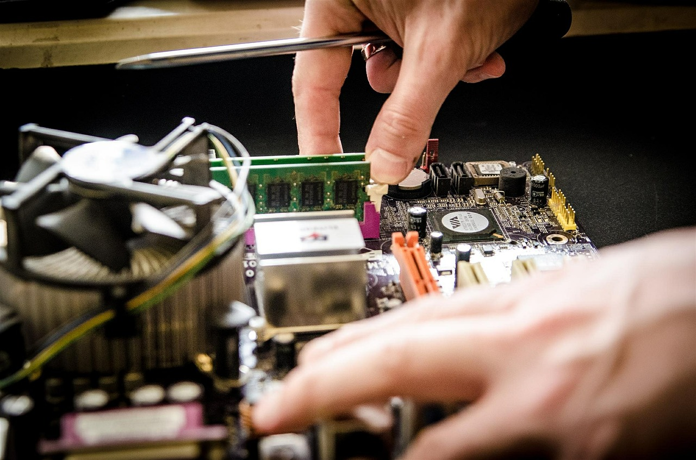

|
คอมพิวเตอร์เป็นอุปกรณ์ที่มีความจำเป็นในชีวิตประจำวันอย่างมาก เรียกได้ว่าเป็นอุปกรณ์สำคัญที่แทบทุกบ้านและสำนักงานต้องมีใช้งาน ปัญหาที่สำคัญอย่างหนึ่งที่เกิดขึ้นบ่อยครั้ง ก็คือ คอมเปิดไม่ติด ปัญหาดังกล่าวนี้ถือได้ว่าคนที่เคยใช้คอมพิวเตอร์ล้วนเคยประสบมาแล้วทั้งสิ้น
หลายๆ ครั้งมักจะแก้ปัญหาด้วยการยกคอมพิวเตอร์ไปให้ช่างช่วยตรวจสอบและแก้ไข แต่บางเคสก็ถือเป็นการแก้ไขที่เสียเวลาและสิ้นเปลืองค่าใช้จ่ายอย่างมาก เพราะในความเป็นจริงแล้วปัญหาคอมเปิดไม่ติด ถ้าลองสังเกตอาการให้ดีแล้ว จะพบว่าการแก้ไขปัญหาดังกล่าวไม่ใช่เรื่องยาก เพียงแค่สังเกตอาการเบื้องต้น
อาการคอมเปิดไม่ติดที่สามารถแก้ไขได้ด้วยตนเอง
1.ความสะอาดของคอมพิวเตอร์
ให้ลองถามตัวเองว่า ทำความสะอาดคอมพิวเตอร์ครั้งสุดท้ายเมื่อไหร่ เมื่อได้คำตอบแล้วก็รีบหาอุปกรณ์มาปัดฝุ่น และทำความสะอาดคอมพิวเตอร์ เพราะฝุ่นถือได้ว่าเป็นตัวการที่สำคัญอย่างหนึ่งที่ทำให้อุปกรณ์ภายในของคอมพิวเตอร์บางตัวไม่สามารถทำงานได้ โดยเฉพาะอย่างยิ่งอุปกรณ์ที่ทำด้วยทองแดง
2.ลองตรวจสอบสายไฟดูก่อน
เพราะหลาย ๆ ครั้ง คอมเปิดไม่ติดก็เกิดจากการลืมเสียบปลั๊ก หรือปลั๊กไฟหลวม ถ้าเสียบแล้วให้ลองตรวจข้อต่อสายไฟทุกส่วน ว่าหลุดหรือหลวมหรือไม่ ถ้าลองต่อทุกอย่างแล้วยังเปิดไม่ติด อาจจะเกิดจากสายไฟภายในขาดก็ได้ ให้ลองเปลี่ยนสายไฟเส้นใหม่มาเสียบดู ถ้าเปิดติดก็ค่อยหาซื้อสายไฟใหม่มาใช้งาน
3.การเกิด Virus ตัวร้าย
ที่ทำให้ไม่สามารถเข้าไปใช้งานในโหมดปกติได้ ลองเข้าไปแก้ไขที่ Save Mode แล้วหาโปรแกรมจัดการเจ้าตัวร้ายออกไป เพียงแค่นี้คอมพิวเตอร์ก็สามารถใช้งานได้ปกติ

ปัญหาคอมเปิดไม่ติด ที่ไม่สามารถแก้ไขได้ด้วยตนเอง
อาการคอมเปิดไม่ติดยอดฮิตที่นอกเหนือจากข้างต้นแล้ว และไม่สามารถแก้ได้ด้วยตัวเอง ก็จำเป็นต้องรีบยกไปให้ช่างคอมพิวเตอร์ซ่อม
1.ถ้าคอมพิวเตอร์เปิดไม่ติดแล้วได้ยินเสียงปี๊บในขณะที่เปิด อาจจะเกิดมากจาก RAM เสียหาย ถ้าเปิดเครื่องเพื่อตรวจสอบไม่เป็น ให้รีบยกไปให้ช่างคอมพิวเตอร์ตรวจสอบจะดีที่สุด
2.ถ้าเปิดคอมพิวเตอร์แล้วไม่สามารถเข้าโหมดใช้งานปกติได้ แต่คอมพิวเตอร์จะ Restart ใหม่ตลอดเวลา อาการนี้เกิดจากเมนบอร์ดมีปัญหา ต้องนำไปซ่อม หรือเปลี่ยน
3.ถ้าคอมเปิดไม่ติด และไม่มีเสียง หรืออาการใด ๆ เป็นสัญญาณเลย อาจจะเกิดจาก Hard Disk เสีย ก็ต้องนำไปให้ช่างคอมพิวเตอร์ตรวจสอบทันที
คอมเปิดไม่ติดถือได้ว่าเป็นปัญหาเลี่ยงไม่ได้สำหรับคอมพิวเตอร์ ดังนั้น ผู้ใช้งานคอมพิวเตอร์ควรรู้จักสังเกตอาการเบื้องต้นก่อน เพื่อให้รู้ว่าคอมพิวเตอร์เป็นอะไร หลาย ๆ ครั้งปัญหาเหล่านี้สามารถแก้ไขได้ด้วยตนเอง หรือถ้าจำเป็นต้องยกไปให้ช่างคอมพิวเตอร์ซ่อมจริง ๆ ก็จะได้รู้อาการเบื้องต้นที่สามารถช่วยแจ้งช่างให้รีบแก้ไขได้รวดเร็วขึ้น
|